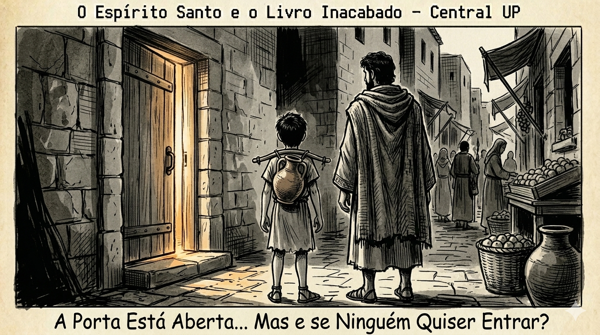
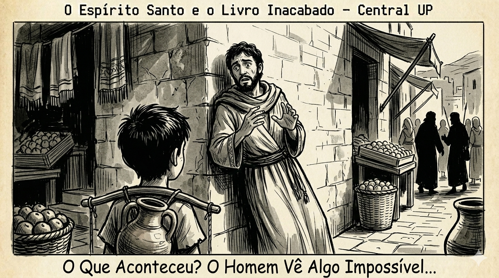

Este devocional abre na quinta-feira, 09/04!
Este devocional abre na quinta-feira, 09/04!
Ele foi só olhar. E encontrou alguém que também não conseguia ir embora.
Levi foi até o bairro dos curtidores de manhã cedo.
Disse pra si mesmo que era só pra ver onde ficava a casa. Reconhecimento de terreno. Nada demais.
O cheiro do bairro era forte, couro e curtume misturados com o ar de Jerusalém. Levi era carregador de água, estava acostumado com cheiros ruins. Mas esse bairro tinha uma qualidade diferente de intenso.
Achou a casa sem muito esforço. Era a única de onde saíam vozes num bairro relativamente quieto naquela manhã. Uma casa comum, porta de madeira entreaberta, janela pequena com luz viva lá dentro.
Levi ficou do outro lado da rua. Observando.
Foi aí que esbarrou em alguém.
Literalmente. Virou pra trás e bateu no ombro de um homem que estava saindo de uma viela lateral, cabeça baixa, andando rápido com aquela postura de quem está tentando não ser visto.
Os dois se olharam.
O homem tinha uns trinta e poucos anos, barba por fazer, olhos vermelhos de quem não dormiu, ou de quem chorou muito, ou talvez as duas coisas. Carregava um manto fechado sobre os ombros mesmo com o calor.
"Desculpa," disse Levi.
O homem olhou pra ele. Depois olhou pra casa. Depois de volta pra Levi.
"Você também está esperando do lado de fora?"
Levi não respondeu. O silêncio foi suficiente.
O homem deu uma risada curta, sem graça. "Eu me chamo Tomé."
Tomé era um dos doze. Levi não sabia o que isso significava direito, mas entendeu que era importante pela forma como o homem disse, como quem carrega um título que ainda não sabe se merece.
Tinha estado com Jesus. Anos seguindo, ouvindo, vendo coisas que não conseguia explicar. E tinha visto a sexta-feira de perto. De muito perto.
Quando começaram a dizer que Jesus tinha ressuscitado, ele não acreditou. Os outros discípulos juravam que tinham visto. Tomé ficou do lado de fora da história, igual Levi ficava do lado de fora daquela porta.
"Eu disse pra eles," falou Tomé, olhando pra casa, "que a menos que eu veja as marcas dos pregos nas mãos dele, e coloque meu dedo nelas, e minha mão no lado dele, eu não vou acreditar."
"Eu precisava de evidência. Não de história."
Os dois ficaram em silêncio por um momento, olhando pra porta entreaberta do outro lado da rua. Vozes lá dentro. Uma risada. O som de alguém falando animado, palavras que não dava pra pegar da rua.
"Então por que você está aqui?" perguntou Levi.
Tomé demorou pra responder.
"Porque eu também não consigo ir embora."

Ficaram ali por um tempo que Levi não soube medir. Pessoas entravam na casa. Pessoas saíam. As que saíam tinham o rosto diferente das que entravam, mas Levi não sabia descrever exatamente como.
Mais cheio, talvez. Como se tivessem recebido alguma coisa lá dentro.
"Eu passei três anos vendo coisas que não têm explicação," disse Tomé, quase pra si mesmo. "Curou gente. Multiplicou pão. Andou em cima da água." Uma pausa. "Eu vi tudo isso e ainda assim, quando disseram que ele tinha ressuscitado, minha primeira reação foi não."
"Por quê?"
"Porque ressurreição é diferente. Milagre eu já vi. Mas voltar da morte..." Tomé balançou a cabeça. "Isso muda tudo. Se isso é verdade, nada fica igual. Nenhuma parte da vida fica igual."
Levi olhou pra porta.
"E você não quer que nada fique igual?"
Tomé ficou quieto por um tempo.
"Eu não sei se estou pronto."
Mais tarde, Tomé entrou. Levi não.
Levi ficou parado mais um tempo depois que Tomé desapareceu pela porta. Deu um passo em direção à casa. Parou. Deu mais um. Parou de novo.
Levi virou e foi entregar água.
Mas a porta ficou na cabeça o dia inteiro.
No fim do dia, voltando pelo mesmo caminho, Levi passou de novo pelo bairro dos curtidores.
Não admitiu pra si mesmo que estava passando de propósito. Mas estava.
A casa estava mais quieta agora. Porta fechada. O cheiro de curtume continuava igual, pelo menos isso não tinha mudado.
E na esquina, encostado na parede com aquela postura de quem acabou de passar por algo enorme e ainda não sabe como ficar de pé direito, estava Tomé.
Mas era um Tomé diferente.
O Tomé da manhã tinha olhos vermelhos e cabeça baixa. Esse estava de pé, olhos abertos, olhando pra frente, com uma expressão que Levi estava começando a reconhecer mas ainda não tinha nome.
Levi chegou perto devagar, como quem se aproxima de algo que pode quebrar se fizer barulho.
"Você entrou," disse Levi.
Tomé não respondeu de imediato. Continuou olhando pra frente.
"Eu vi," ele disse por fim.
Levi esperou.
"Eu vi. E toquei. E é..."
Parou. Olhou pra as próprias mãos. Abriu os dedos. Fechou. De volta pra Levi.
"Não tem palavra."
Tomé não riu. Estava sério demais pra isso. Estava num lugar que o humor não alcançava ainda.
"Tem uma coisa muito grande começando," ele disse, quase pra si mesmo. "Muito maior do que eu entendo. Muito maior do que qualquer um de nós entende ainda."
Uma pausa longa.
"Eu só não sei o que é."

Levi ficou olhando pra ele por um tempo.
Esse era o homem que horas atrás tinha dito que precisava de evidência. Que não aceitava história. Que tinha colocado como condição tocar com os próprios dedos.
E agora estava parado numa esquina do bairro dos curtidores sem conseguir descrever o que tinha acontecido.
Começando. Não terminando. Não explicando direito. Começando.
Levi foi embora sem dizer mais nada. Tomé continuou encostado na parede, olhando pra as próprias mãos.
E Levi, pela primeira vez em quatro dias, não foi pra casa pensando em Jesus.
Foi pra casa pensando no que vem depois de Jesus.
Central UP — IEQ Central Londrina
Desenvolvido por Pr. Eduardo